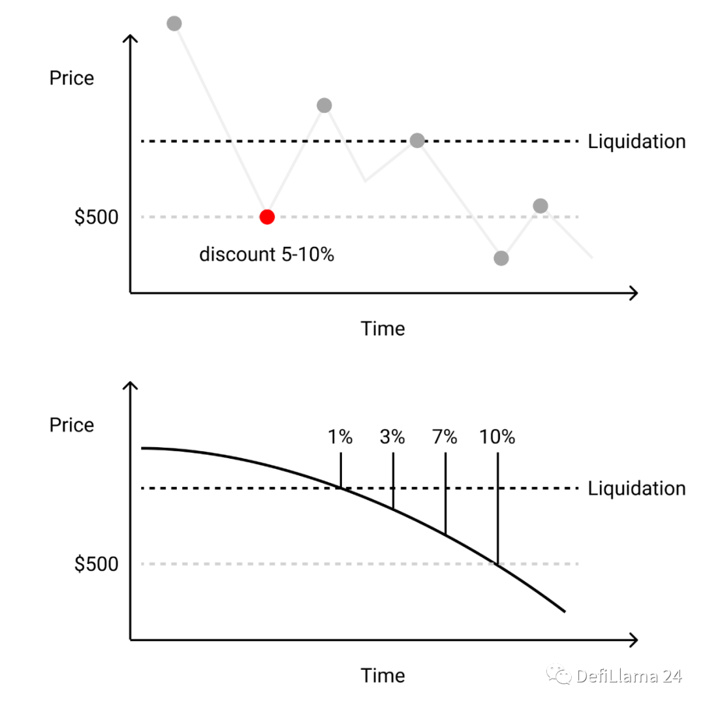

深入解析 Euler：下一代无许可 DeFi 借贷协议
深入解析 Euler：下一代无许可 DeFi 借贷协议
引言
Euler 是一个基于以太坊的去中心化金融（DeFi）借贷协议，旨在填补现有借贷市场的空白。尽管 Compound、Aave 等第一代借贷协议已经成为 DeFi 领域的常用工具，占据了约 90% 的市场份额，但它们主要集中在主流代币的借贷服务，如 ETH、USDC 等。这些平台对非主流代币的支持有限，任何新代币的上市都需要通过治理框架的投票批准，过程繁琐且不够开放。
Euler 旨在解决这一问题，通过引入无许可（Permissionless）的借贷市场，允许任何人在平台上列出几乎任何代币，只要该代币在 Uniswap v3 上具有与 WETH 的交易对。这为长尾资产的持有者和交易者提供了全新的机会，满足了市场对非主流代币借贷的需求。
本文将深入探讨 Euler 的业务模型、资产分层、风险管理、预言机机制、清算机制、利率模型以及独特的子账户设计，解析其在 DeFi 借贷领域的创新之处。
一、填补市场空缺
1. 现有借贷协议的局限
- 有限的资产支持：现有的借贷协议如 Compound、Aave 等主要支持主流代币，对非主流代币的借贷支持有限。
- 上市流程繁琐：新代币要在这些平台上市，需要通过治理投票，过程复杂且耗时，不符合去中心化和无许可的理念。
- 长尾资产需求未被满足：持有非主流代币的用户希望通过借贷赚取收益，或者交易者希望做空某些资产，但缺乏平台支持。
2. Euler 的创新
- 无许可上市：任何人都可以在 Euler 上列出新的借贷市场，只要该代币在 Uniswap v3 上具有与 WETH 的交易对。
- 满足市场需求：为长尾资产提供借贷服务，满足持有者和交易者的多样化需求。
- 促进 DeFi 生态发展：支持更多的资产，有助于 DeFi 生态的丰富和多样化。
二、Euler 的业务模型
1. 资金池的创建
- 灵活的资产支持：任何与 ETH 组成交易对的代币都可以在 Euler 上创建资金池。
- 无许可机制：无需经过治理投票或中心化审批，资产可以自由上市。
2. 资产的分层评级
Euler 将资产分为三个层级，以管理风险和资本效率：
-
隔离层（Isolation Tier）
- 特点：资产只能单独借入，不能作为抵押品，也不能与其他资产一起借入。
- 适用资产：默认情况下，所有新上市的资产都在隔离层。
- 优势：即使资产价格剧烈波动或发生清算，也不会影响其他资产，降低系统风险。
- 案例：用户持有 USDC 和 DAI，想借入隔离层资产 ABC，只能借入 ABC，不能借入其他资产。
-
跨层（Cross Tier）
- 特点：资产不能作为抵押品，但可以与其他资产一起借入。
- 优势：提供更大的借贷灵活性，但需要承担更高的风险。
- 风险考虑：因为资产可以互相影响，可能在清算时对其他资产造成影响。
-
抵押层（Collateral Tier）
- 特点：资产可以作为抵押品、参与普通借贷、进行交叉借款。
- 优势：提高资本效率，支持更多的借贷策略。
- 案例：用户存入 DAI 和 USDC，作为抵押品借入 UNI 或 LINK。
3. 资产层级的提升
- 治理机制：通过 Euler 原生治理代币 EUL 的持有者投票，资产可以从隔离层提升到更高的层级。
- 利益一致性：EUL 持有者有动力确保平台的安全性和资本效率，谨慎提升资产层级。
三、风险调整后的借款能力
1. 传统借贷协议的风险管理
- 抵押因子：如 Compound 使用抵押因子来调整借款人可借金额，未考虑借入资产的风险差异。
- 风险忽视：不同资产的价格波动和风险特性不同，仅使用抵押因子无法全面反映风险。
2. Euler 的风险管理方法
- 借入因子与抵押因子：Euler 引入了借入因子，结合抵押因子，全面评估借款人的风险。
- 抵押因子：反映抵押资产的风险，表示抵押资产价值的折扣率。
- 借入因子：反映借入资产的风险，表示借入资产价值的折扣率。
3. 风险调整计算示例
假设用户持有价值 $1000 的 USDC，想借入 UNI：
- USDC 的抵押因子：0.9
- UNI 的借入因子：0.7
- 可借金额计算：$1000 * 0.9 * 0.7 = $630
- 风险调整后抵押品价值：$1000 * 0.9 = $900
- 风险调整后负债价值：$630 / 0.7 = $900
清算条件：
- 借入的 UNI 价值上升到超过 $900：由于 UNI 价格上涨，导致负债风险增加，触发清算。
- USDC 价值下跌到低于 $900：抵押品价值下降，无法覆盖负债，触发清算。
4. 优势
- 精准风险管理：考虑借入和抵押资产的风险，提供更精确的借款能力评估。
- 灵活的风险控制：针对不同资产设置不同的风险参数，提高系统的安全性。
四、TWAP 预言机机制
1. 定价需求
- 资产定价：为了评估用户的抵押品和负债价值，需要准确的资产价格。
- 去中心化需求：Euler 旨在实现无许可上市，无法依赖中心化或人工干预的价格来源。
2. Uniswap v3 的 TWAP 预言机
- 时间加权平均价格（TWAP）：利用一段时间内资产的平均价格，平滑短期波动。
- 去中心化数据源：直接从 Uniswap v3 获取价格数据，无需信任第三方。
- 条件：目标资产需要在 Uniswap v3 上有与 WETH 的交易对和足够的流动性。
3. TWAP 的优势
-
抵抗价格操纵攻击：
- 防止闪电贷攻击：短期的价格操纵无法显著影响 TWAP，保护系统安全。
-
防止不必要的清算：
- 平滑价格波动：避免因短暂的价格波动导致误判清算，保护借款人利益。
-
减少 MEV 攻击：
- 降低矿工可提取价值（MEV）：连续的价格曲线减少了交易被提前执行或重组的可能性。

- 降低矿工可提取价值（MEV）：连续的价格曲线减少了交易被提前执行或重组的可能性。
五、清算机制
1. 清算条件
- 风险阈值：当借款人的风险调整后负债价值超过其风险调整后抵押品价值时，头寸被标记为清算。
- 清算目的：防止借款人违约，保护协议的资金安全。
2. Euler 的清算机制
- 荷兰式拍卖：
- 折扣动态调整：清算奖励的折扣率根据头寸的水下程度（风险程度）而增加。
- 清算人决策：清算人可以根据当前折扣率和自身成本，选择何时进行清算。
3. 限制 MEV（矿工可提取价值）
-
传统问题：
- 优先 Gas 竞价（PGA）：清算人通过提高 Gas 费竞争清算机会，导致成本增加和 MEV 问题。
- 固定折扣的局限：固定的清算折扣可能导致清算不及时或激励不足。
-
Euler 的解决方案：
- 动态折扣：折扣率随着时间增加，减少了清算人的竞价压力。
- 流动性提供者激励：为流动性提供者提供“折扣助推器”，鼓励他们成为清算人，比领跑者获得更高的利润。
- 持续清算机会：TWAP 的平滑价格提供了连续的清算机会，降低了 MEV 风险。
六、反应性利率模型
1. 传统利率模型的局限
- 静态参数化：如 Compound、Aave 等使用静态线性或分段线性的利率模型，需要手动调整参数。
- 调参困难：参数设置不当可能导致借贷成本失衡，影响资金池的利用率和安全性。
2. Euler 的利率模型
-
PID 控制器：
- 原理：利用控制理论，根据系统的偏差自动调整利率。
- 目标：维持资产利用率在目标范围内，确保资金池的健康运行。
-
工作机制：
- 当利用率高于目标：利率放大，增加借贷成本，鼓励还款，降低利用率。
- 当利用率低于目标：利率降低，减少借贷成本，鼓励借款，提高利用率。
3. 优势
- 实时调整：利率根据市场反馈自动调整，无需人工干预。
- 适应性强：适用于不同资产的市场条件，提高资金利用率和资本效率。
七、子账户设计
1. 问题背景
- 资产层级限制：在隔离层借入资产后，账户无法再借入其他资产，影响用户体验。
2. 子账户的引入
- 多达 256 个子账户：每个以太坊账户可以创建多个子账户，包括主账户。
- 独立策略：每个子账户可以独立管理头寸，制定不同的借贷策略。
- 简化操作：用户只需一次批准代币访问权限，即可在所有子账户中使用，方便快捷。
3. 优势
- 灵活性：满足用户多样化的借贷需求，提升平台的易用性。
- 风险隔离：不同子账户的风险相互独立，增强资产安全性。
八、总结
Euler 通过一系列创新设计，实现了无许可的 DeFi 借贷平台，满足了市场对长尾资产借贷的需求。其主要特点包括：
- 资产分层：通过隔离层、跨层、抵押层对资产进行分级管理，平衡风险和资本效率。
- 风险调整：引入借入因子和抵押因子，精细化风险管理，提高系统安全性。
- 去中心化预言机：使用 Uniswap v3 的 TWAP 预言机，实现资产的去中心化定价。
- 清算优化：采用荷兰式拍卖机制，动态调整清算折扣，限制 MEV 问题，保护借款人和清算人利益。
- 智能利率：使用 PID 控制器，实现利率的实时反应性调整，适应市场变化。
- 子账户功能：提供多子账户支持，提升用户体验和操作灵活性。
这些创新使 Euler 有望成为 DeFi 领域的下一代借贷协议，真正实现无许可上市，符合去中心化的精神。虽然 Euler 在以太坊主网上线的时间不长，仍需要更多的时间和团队的持续改进来验证其机制的有效性，但其独特的设计理念为 DeFi 借贷市场带来了新的可能性。
参考资料
免责声明：本文旨在提供信息交流，不构成任何投资建议。投资者应自行评估风险，谨慎决策。